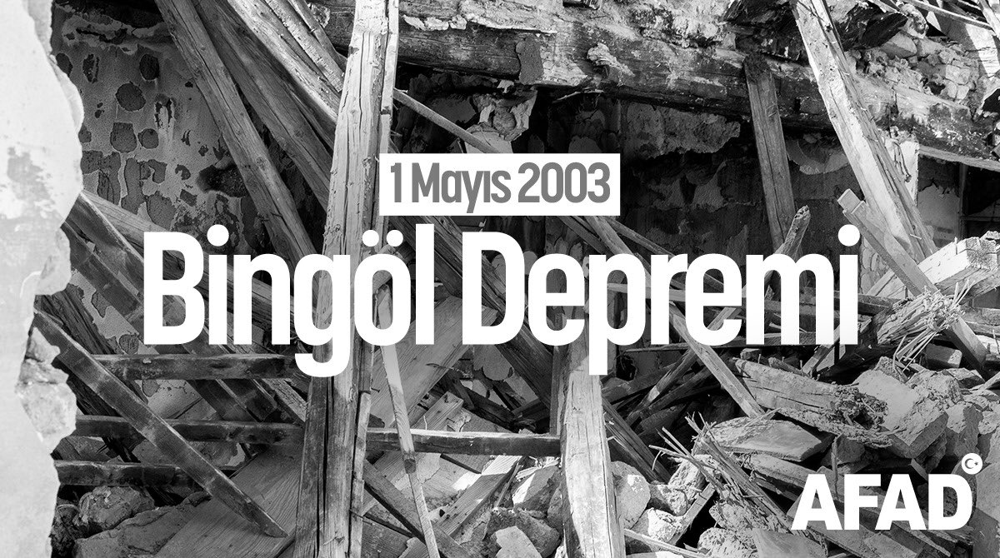
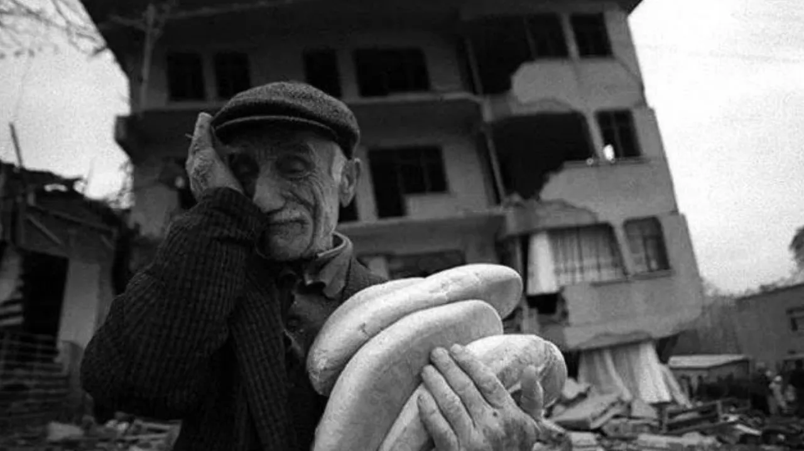
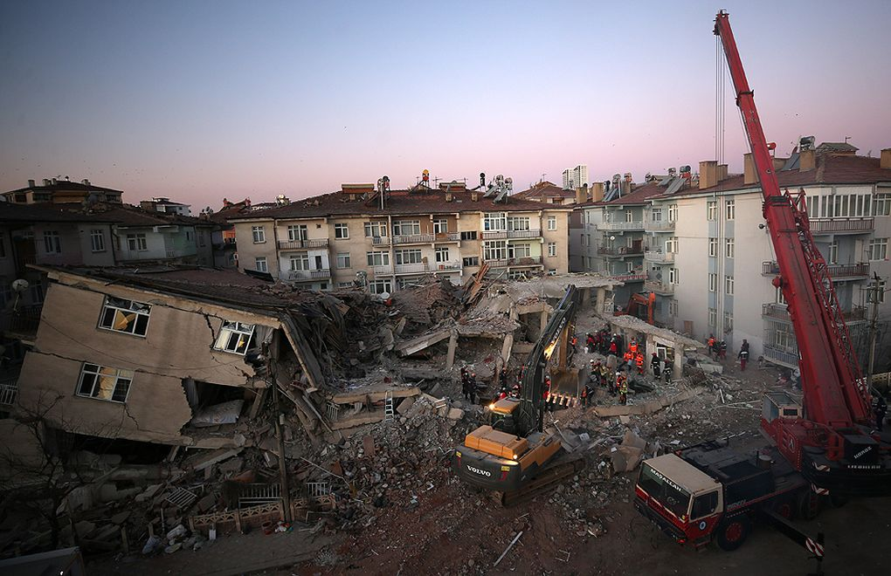
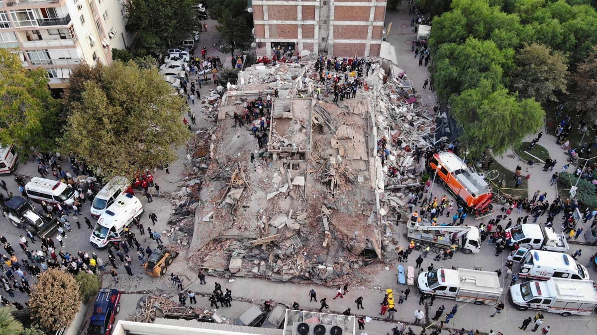
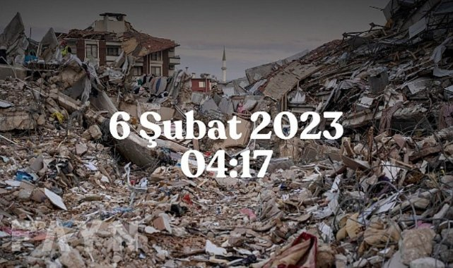

Haberler
1 Mayıs 2003 Bingöl Depremi
Bingöl, 1 Mayıs 2003'te meydana gelen, 174 kişinin hayatını kaybettiği, 520 kişinin de yaralandığı 6,4 büyüklüğündeki depremin ardından başlatılan kentsel dönüşümle düzenli ve depreme dayanaklı yapılara kavuşturuldu. Bingöl'de 1 Mayıs 2003'te meydana gelen depremin zihindeki izleri, aradan geçen 18 yıla rağmen silinmedi. O dönemde yapıların depreme elverişsiz olması kentte büyük bir yıkıma, can kayıplarına ve yaralanmalara yol açtı.
Devamını Oku23 Ekim 2011 Van Depremi
Depremlerin yıllar önce de büyük acılara yol açtığı Van, merkez üssü Tuşba ilçesine bağlı Tabanlı Mahallesi olan 23 Ekim 2011'de 7,2 büyüklüğündeki depremle sarsıldı. Kent merkezi, Erciş ilçesi ve birçok köyde büyük hasara yola açan depremde 604 kişi yaşamını yitirdi, çok sayıda bina yıkıldı.
Devamını Oku24 Ocak 2020 Sivrice Depremi
24 Ocak’ta meydana gelen 6.8’lik depremde Elazığ’da 37, Malatya’da 4 olmak üzere 41 kişi hayatını kaybederken, 20 binden fazla konut ise ağır hasar gördü.
Devamını Oku30 Ekim 2020 Seferihisar Depremi
Ege Denizi'nde 30 Ekim 2020 Cuma günü saat 14.51'de Seferihisar ilçesi Doğanbey Mahallesi'nin 23 kilometre açığında 16,54 kilometre derinlikte kırılan fayın neden olduğu 6,6 büyüklüğündeki deprem, yaklaşık 15 saniye sürdü.
Devamını Oku6 Şubat 2023 Kahramanmaraş Depremi
26 Şubat 2023'te saat 04.17’de meydana gelen Kahramanmaraş merkezli 7,7 büyüklüğündeki depremin ardından saat 13.24’te 7,6 büyüklüğünde ikinci deprem gerçekleşti.
Devamını OkuDeprem Öncesi Alınacak Önlemler
Türkiye’de yaşıyorsanız ve yaşadığınız bölge deprem açısından riskli bir bölge ise, yapmanız gereken birçok işlem bulunmaktadır. Deprem öncesinde yapılması gerekenler başlıca şöyle sıralanır;
- Yerleşim bölgeleri titizlikle belirlenmelidir. Kaygan ve ovalık bölgeler iskana açılmamalıdır. Konutlar gevşek toprağa sahip meyilli arazilere yapılmamalıdır.
- Başta deprem olmak üzere doğal afetler nedeniyle zarar görebileceğinizi unutmayın ve mutlaka sigorta yaptırın.
- Deprem sırasında ve sonrasında neler yapmanız gerektiğini aileniz ile planlamanız oldukça önemlidir. Böylece depremi herhangi bir sorun yaşamadan kolayca atlatabilirsiniz. Bunun için acil durum planı yapmanızı öneririz.
- Acil durum telefonları mutlaka not edilmeli ve cüzdanda taşınmalarının yanı sıra buzdolabı gibi rahatça görülebilecek yerlere de asılmalıdır.
- Telefon hatlarını meşgul etmemek için yakınlarınız arasından bir iletişim sorumlusu belirleyin. Seçeceğiniz iletişim sorumlusu mümkünse sizden uzak bir şehirde yaşayan bir yakınınız olsun. Çünkü aynı bölgede iletişim kurmaya çalışmanız durumunda kendisine telefonla ulaşamayabilirsiniz. Ancak farklı illeri aramanız daha kolay olacaktır. Böylece herkes birbirinden haberdar olabilir.
- AKUT Arama Kurtarma Derneği ile birlikte Genel Bilgi Teknolojileri Ltd. Şti. tarafından geliştirilen “Güvendeyim” uygulamasını indirin. Güvendeyim ile tek tuşla sevdiklerinize otomatik olarak konumunuzu gönderebilir ve “iyi” olduğunuzu onlara kolayca haber verebilirsiniz.
- Yaşadığınız veya çalıştığınız yerin deprem yönetmeliklerine uygun olarak inşa edildiğinden emin olun. Eğer eviniz veya iş yerinizin güvenliğinden şüphe duyuyorsanız, kamu kurumlarına başvurarak gerekli incelemelerin yapılmasını sağlayabilirsiniz.
- Yapılar deprem etkilerine karşı dayanıklı inşa edilmelidir. (Yapı Tekniğine ve İnşaat Yönetmeliğine uygun olarak)
- İmar planında konuta ayrılmış yerler dışındaki yerlere ev ve bina yapılmamalıdır.
- Dik yarların yakınına, dik boğaz ve vadilerin içine bina yapılmamalıdır.
- Çok kar yağan ve çığ gelen yamaçlarda bina yapılmamalıdır.
- Mevcut binaların dayanıklılıkları artırılmalıdır.
- Konutlara deprem sigortası yaptırılmalıdır.
Deprem Anında Yapılması Gerekenler
Deprem Anında Bina İçerisindeyseniz;
- Kesinlikle panik yapılmamalıdır.
- Sabitlenmemiş dolap, raf, pencere vb. eşyalardan uzak durulmalıdır.
- Varsa sağlam sandalyelerle desteklenmiş masa altına veya dolgun ve hacimli koltuk, kanepe, içi dolu sandık gibi koruma sağlayabilecek eşya yanına çömelerek hayat üçgeni oluşturulmalıdır.
- Baş iki el arasına alınarak veya bir koruyucu (yastık, kitap vb) malzeme ile korunmalıdır. Sarsıntı geçene kadar bu pozisyonda beklenmelidir.
- Güvenli bir yer bulup, diz üstü ÇÖK, Başını ve enseni koruyacak şekilde KAPAN, Düşmemek için sabit bir yere TUTUN
- Merdivenlere ya da çıkışlara doğru koşulmamalıdır.
- Balkona çıkılmamalıdır.
- Balkonlardan ya da pencerelerden aşağıya atlanmamalıdır.
- Kesinlikle asansör kullanılmamalıdır.
- Telefonlar acil durum ve yangınları bildirmek dışında kullanılmamalıdır.
- Kibrit, çakmak yakılmamalı, elektrik düğmelerine dokunulmamalıdır.
- Tekerlekli sandalyede isek tekerlekler kilitlenerek baş ve boyun korumaya alınmalıdır.
- Mutfak, imalathane, laboratuvar gibi iş aletlerinin bulunduğu yerlerde; ocak, fırın ve bu gibi cihazlar kapatılmalı, dökülebilecek malzeme ve maddelerden uzaklaşılmalıdır.
- Sarsıntı geçtikten sonra elektrik, gaz ve su vanalarını kapatılmalı, soba ve ısıtıcılar söndürülmelidir.
- Diğer güvenlik önlemleri alınarak gerekli olan eşya ve malzemeler alınarak bina daha önce tespit edilen yoldan derhal terk edilip toplanma bölgesine gidilmelidir.
- Okulda sınıfta ya da büroda ise sağlam sıra, masa altlarında veya yanında; koridorda ise duvarın yanına hayat üçgeni oluşturacak şekilde ÇÖK-KAPAN-TUTUN hareketi ile baş ve boyun korunmalıdır.
- Pencerelerden ve camdan yapılmış eşyalardan uzak durulmalıdır.
Deprem Anında Açık Alandaysanız;
- Enerji hatları ve direklerinden, ağaçlardan, diğer binalardan ve duvar diplerinden uzaklaşılmalıdır. Açık arazide çömelerek etraftan gelen tehlikelere karşı hazırlıklı olunmalıdır.
- Toprak kayması olabilecek, taş veya kaya düşebilecek yamaç altlarında bulunulmamalıdır. Böyle bir ortamda bulunuluyorsa seri şekilde güvenli bir ortama geçilmelidir.
- Binalardan düşebilecek baca, cam kırıkları ve sıvalara karşı tedbirli olunmalıdır.
- Toprak altındaki kanalizasyon, elektrik ve gaz hatlarından gelecek tehlikelere karşı dikkatli olunmalıdır.
- Deniz kıyısından uzaklaşılmalıdır.
Deprem Anında Araç Kullanıyorsanız;
- Sarsıntı sırasında karayolunda seyir halindeyseniz;
- Bulunduğunuz yer güvenli ise; yolu kapatmadan sağa yanaşıp durulmalıdır. Kontak anahtarı yerinde bırakılıp, pencereler kapalı olarak araç içerisinde beklenmelidir. Sarsıntı durduktan sonra açık alanlara gidilmelidir.
- Araç meskun mahallerde ya da güvenli bir yerde değilse (ağaç ya da enerji hatları veya direklerinin yanında, köprü üstünde vb.); durdurulmalı, kontak anahtarı üzerinde bırakılarak terk edilmeli ve trafikten uzak açık alanlara gidilmelidir.
- Sarsıntı sırasında bir tünelin içindeyseniz ve çıkışa yakın değilseniz; araç durdurulup aşağıya inilmeli ve yanına yan yatarak ayaklar karına çekilip, ellerle baş ve boyun korunmalıdır. (ÇÖK-KAPAN-TUTUN)
- Kapalı bir otoparkta iseniz; araç dışına çıkılıp, yanına yan yatarak, ellerle baş ve boyun korunmalıdır. Yukarıdan düşebilecek tavan, tünel gibi büyük kitleler aracı belki ezecek ama yok etmeyecektir. Araç içinde olduğunuz takdirde, aracın üzerine düşen bir parça ile aracın içinde ezilebilirsiniz.
Metroda veya Diğer Toplu Taşıma Araçlarındaysanız;
- Gerekmedikçe, kesinlikle metro ve trenden inilmemelidir. Elektriğe kapılabilirsiniz veya diğer hattan gelen başka bir metro yada tren size çarpabilir.
- Sarsıntı bitinceye kadar metro ya da trenin içinde, sıkıca tutturulmuş askı, korkuluk veya herhangi bir yere tutunmalı, metro veya tren personeli tarafından verilen talimatlara uyulmalıdır.
Deprem Sonrasında Yapılması Gerekenler
Kapalı Alandaysanız;
- Önce kendi emniyetinizden emin olun.
- Sonra çevrenizde yardım edebileceğiniz kimse olup olmadığını kontrol edin.
- Depremlerden sonra çıkan yangınlar oldukça sık görülen ikincil afetlerdir. Bu nedenle eğer gaz kokusu alırsanız, gaz vanasını kapatın. Camları ve kapıları açın. Hemen binayı terk edin.
- Dökülen tehlikeli maddeleri temizleyin.
- Yerinden oynayan telefon ahizelerini telefonun üstüne koyun.
- Acil durum çantanızı yanınıza alın, mahalle buluşma noktanıza doğru harekete geçin.
- Radyo ve televizyon gibi kitle iletişim araçlarıyla size yapılacak uyarıları dinleyin.
- Cadde ve sokakları acil yardım araçları için boş bırakın.
- Her büyük depremden sonra mutlaka artçı depremler olur. Artçı depremler zaman içerisinde seyrekleşir ve büyüklükleri azalır. Artçı depremler hasarlı binalarda zarara yol açabilir. Bu nedenle sarsıntılar tamamen bitene kadar hasarlı binalara girilmemelidir. Artçı depremler sırasında da ana depremde yapılması gerekenler yapılmalıdır.
Açık Alandaysanız;
- Çevrenizdeki hasara dikkat ederek bunları not edin.
- Hasarlı binalardan ve enerji nakil hatlarından uzak durun.
- Önce yakın çevrenizde acil yardıma gerek duyanlara yardım edin.
- Sonra mahalle toplanma noktanıza gidin.
- Yardım çalışmalarına katılın. Özel ilgiye ihtiyacı olan afetzedelere -yaşlılar, bebekler, hamileler, engelliler- yardımcı olun.
Yıkıntı Altında Mahsur Kaldıysanız;
- Paniklemeden durumunuzu kontrol edin.
- Hareket kabiliyetiniz kısıtlanmışsa çıkış için hayatınızı riske atacak hareketlere kalkışmayın. Biliniz ki kurtarma ekipleri en kısa zamanda size ulaşmak için çaba gösterecektir.
- Enerjinizi en tasarruflu şekilde kullanmak için hareketlerinizi kontrol altında tutun.
- El ve ayaklarınızı kullanabiliyorsanız su, kalorifer, gaz tesisatlarına, zemine vurmak suretiyle varlığınızı duyurmaya çalışın.
- Sesinizi kullanabiliyorsanız kurtarma ekiplerinin seslerini duymaya ve onlara seslenmeye çalışınız. Ancak enerjinizi kontrollü kullanın.